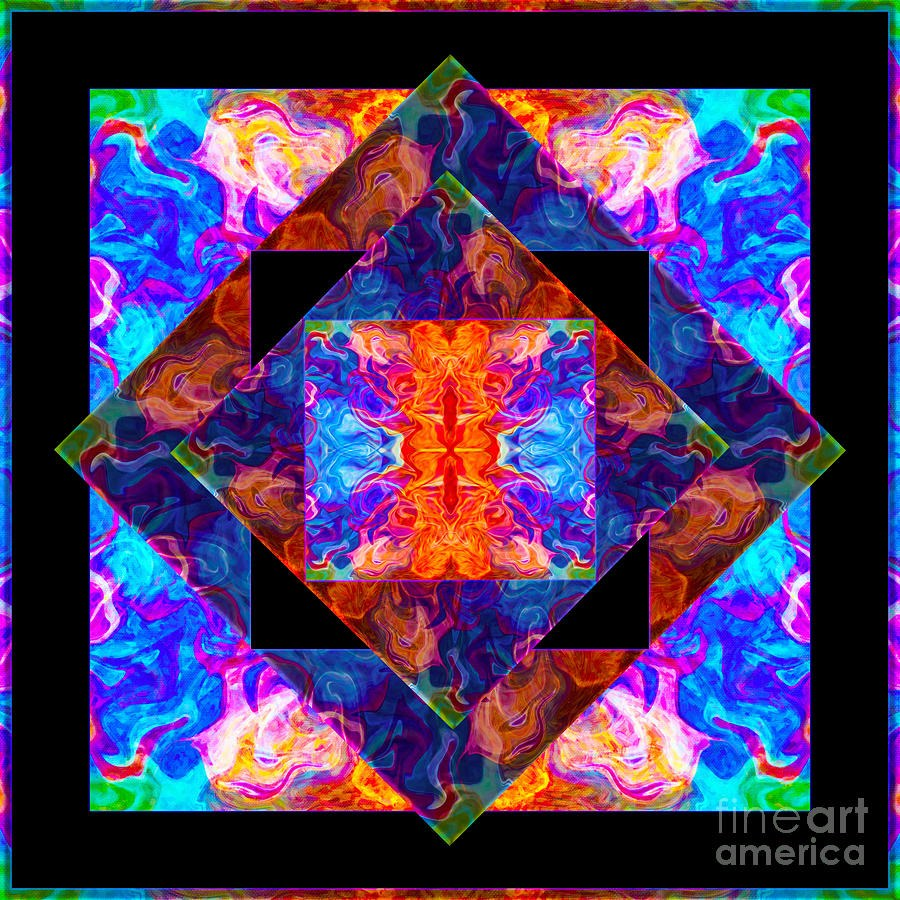

Ember Window - Kaleidoscope Mandala in Blue and Orange
Spiritual, Mandala & Symbolic · square
Two tilted squares overlap inside a thick black frame, and a small upright square sits at the center, holding a glowing orange-and-red core. Marbled, flame-like swirls of electric blue, magenta, violet and orange fill the shapes and repeat in each corner, mirrored left to right and top to bottom.
The black bands and corner blocks make the colors look vivid and gem-like. Cool blues around a hot center give the middle a luminous quality, and the rotated squares add a pinwheel turn to an otherwise strictly symmetrical design. It can read as stained glass or a lit window.
The symmetry brings order and focus, while the curling ribbons of color invite close looking. Each corner and diamond rewards a second glance with new turns of pattern.
The square format and black frame suit a focal wall that can take bold color. It works as a single statement piece or as a vivid anchor beside quieter neutrals.
Choose your size, paper, canvas, metal or frame. Printed, shipped and guaranteed by Fine Art America.
Artwork by Omaste Witkowski.